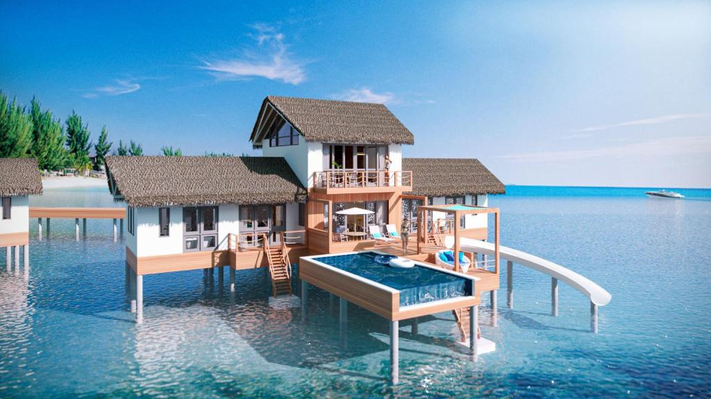

馬爾地夫渡假村
隱密性高
每間度假村獨佔一整個島嶼，且多數位於無人島或私人島嶼上，因此可以享有環境優美、隱密性高的私人沙灘、私人泳池等。
食材奢華
度假村提供高水準的住宿、食物和服務，包括美味、高品質的海鮮、多種主題餐廳和酒吧等。
休閒娛樂
度假村內提供全方位的豪華設施，通常設有SPA、健身房、高爾夫球場、水療中心等各種休閒娛樂，可供旅客盡情享受。
水上活動
度假村通常都擁有私人沙灘和珊瑚礁，可以在此進行潛水、浮潛等水上活動，或者租用帆船、快艇等設施享受陽光海灘。